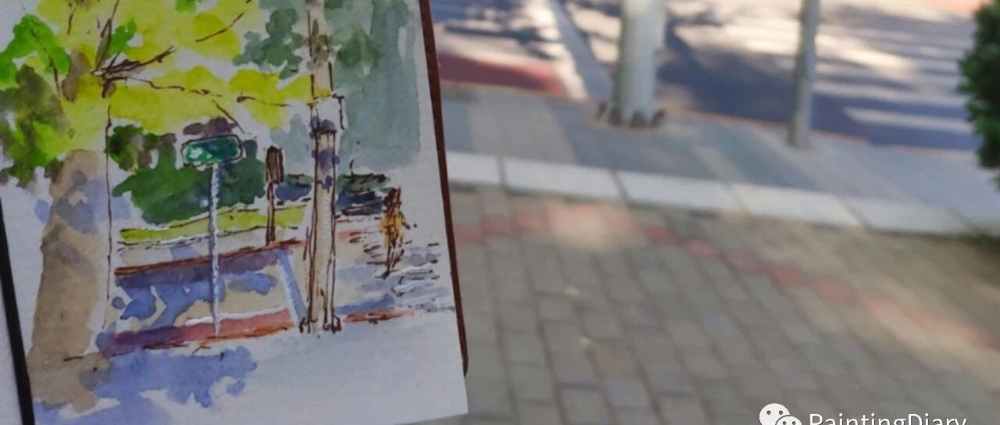

关于在宝贵休息日坐了4小时地铁学会了什么叫漂流的故事
原创
LCX
LCX
PaintingDiary
2023年05月07日 18:39
北京
在小说阅读器中沉浸阅读
今天本来打算上午去图书馆换个书，下午享受一下宝贵的休息日来着。
1h漫长的地铁到达图书馆后，选好书准备借走，借书机提醒我有一本书欠费了，需要先还书清空欠款才能再借其他书。
因为疫情期间图书都可以无限延长还书日来着，都没注意那本书的归还日期。
原地悔恨
+裂开
。几分钟后终于接受了这个无奈的事实，有气无力地把选好的书放回了书架，准备回家。
又坐了一个小时地铁到家都已经十二点多了，心情只能用欲哭无泪来形容。
吃过饭还是决定今天就把这件事了结，因为有本书真的很想看，不想等下周了，再说下周可能又被人借走了。
于是我又重振心情，在昏昏沉沉的午后休憩时间，拿着那本过期的书，再一次踏上了借书之旅。
1个小时之后我终于又抵达了图书馆，还好，刚刚选的书还都稳稳当当地呆在书架上，准备借走的时候那本书。。。报。错。了。
说是外馆书没法借。工作人员看错了才会放在架上。
工作人员说你要是很想看，就在这翻翻吧。
行吧。只能坐在旁边的凳子上开始看。
还好这本书短。不过是一本非常值得读的好书，有些地方还非常符合小编当时的心境，有种被安抚的感觉。
比如这页：
从图书馆出来的时候都四点了，虽然这一天大部分时间都耗在了地铁上，但还是觉得今天非常值得，有种幸运的感觉。
就当作是这页里说的"趣味漂流"吧～
心情大好，坐在图书馆外面的长椅上享受下节假日傍晚的阳光。拿出我借的其他书挨个翻了翻，也画下了这个奇妙的下午。
一天有可能很短，也有可能很长，
有可能一无所获，也有可能满载而归。
取决于我们看待它的态度。
最后把今天这本宝藏书
《非平面》
推荐给大家，
是一本漫画没错，
难怪工作人员建议我坐那边翻完hhh。
不过别小看它，它可是
哥伦比亚大学
博士论文
哦～
是首部以漫画形式呈现的学术论文，是不是很神奇！
灵感来自于《平面国》，很薄，但神作。
这两本书都很值得一读再读，
很适合在迷茫的时候翻翻，远离思维僵化，
看完有种系统更新了的感觉～强烈推荐！
p.s.刚发现微信读书免费就能看，我这是折腾啥呢
。
欢迎留言安慰我、转发或者给个"在看"哦～！
下回见！
 +裂开
+裂开 。几分钟后终于接受了这个无奈的事实，有气无力地把选好的书放回了书架，准备回家。
。几分钟后终于接受了这个无奈的事实，有气无力地把选好的书放回了书架，准备回家。


 难怪工作人员建议我坐那边翻完hhh。。+裂开。几分钟后终于接受了这个无奈的事实，有气无力地把选好的书放回了书架，准备回家。难怪工作人员建议我坐那边翻完hhh。。
难怪工作人员建议我坐那边翻完hhh。。+裂开。几分钟后终于接受了这个无奈的事实，有气无力地把选好的书放回了书架，准备回家。难怪工作人员建议我坐那边翻完hhh。。